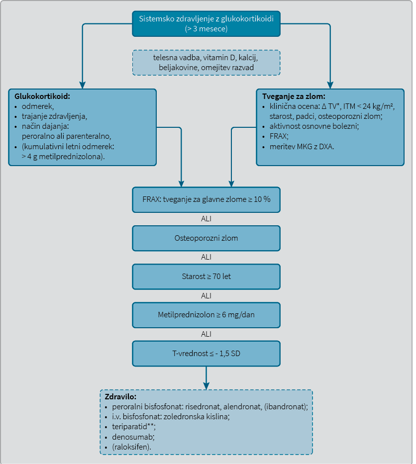

Strokovna stališča Združenja endokrinologov Slovenije o obravnavi glukokortikoidne osteoporoze
A position statement of the Slovenian endocrine society on the management of glucocorticoid-induced osteoporosis
Izvleček
Zdravljenje z glukokortikoidi je najpogostejši vzrok sekundarne osteoporoze. Za glukokortikoidno osteoporozo je značilno zelo hitro zmanjšanje mineralne kostne gostote z naglim zvišanjem tveganja za osteoporozne zlome, zato priporočamo ob uvedbi glukokortikoida oceno bolnikovega tveganja za zlom in svetovanje glede zdravega načina življenja ter vnosa kalcija, vitamina D in beljakovin. Če je indicirano, uvedemo tudi eno od zdravil za zaščito kosti, s čimer povečamo mineralno kostno gostoto in zmanjšamo tveganje za zlome vretenc. Večinoma predpišemo bisfosfonate, bolj ogroženim bolnikom, ki so zlome že utrpeli, lahko tudi teriparatid.
Abstract
Treatment with glucocorticoids is the most common cause of secondary osteoporosis. Glucocorticoid osteoporosis is characterised by a very rapid decline in bone mineral density with a rapid increase in the fracture risk, so at the time of glucocorticoid prescription the patient’s risk of fracture should be assessed and advice regarding healthy lifestyle, intake of calcium, vitamin D and protein should be given. If indicated, bone-protective agents are introduced as well to increase bone mineral density and reduce vertebral fractures risk. Bisphosphonates are the first choice, while teriparatide is reserved for patients with higher fracture risk who have already sustained a fracture.
1 Uvod
Zdravljenje z glukokortikoidi je najpogostejši vzrok sekundarne osteoporoze, ki najbolj prizadene dele skeleta s prevladujočo trabekularno kostjo, npr. ledveno hrbtenico in proksimalno stegnenico. Osteoporozni zlom utrpi 30‒50 % bolnikov, ki se dolgotrajno zdravijo z glukokortikoidi. Mineralna kostna gostota (MKG), ki jo izmerimo z dvoenergijsko rentgensko absorpciometrijo (DXA), se v prvem letu zdravljenja zmanjša za kar 6‒12 %, kasneje pa za približno 3 % letno. Že v prvih treh mesecih po uvedbi glukokortikoidov se tveganje za zlome poveča za 75 %, zato moramo ogrožene bolnike čim prej prepoznati in jih ustrezno zaščititi (1). V zadnjih letih je postalo jasno, da samo z upoštevanjem izvida DXA spregledamo večji del bolnikov, ki bodo utrpeli zlom, saj so poleg MKG pomembni tudi številni drugi dejavniki tveganja za zlome (2).
V skladu z opisanimi dognanji smo v Združenju endokrinologov Slovenije (ZES) oblikovali strokovna stališča o obravnavi glukokortikoidne osteoporoze pri odraslih bolnikih, ki vsaj tri mesece sistemsko prejemajo glukokortikoide. Stališča so bila predstavljena in sprejeta na rednem sestanku ZES dne 18. 3. 2016 v Rogaški Slatini, potrjena na SSIS dne 20. 6. 2018 in GSS SZD dne 11. 9. 2018.
Pripravili smo jih na podlagi priporočil Mednarodnega združenja za osteoporozo (
2 Epidemiologija
Kronično zdravljenje s peroralnimi glukokortikoidi je zaradi močnih protivnetnih in domnevnih imunosupresivnih učinkov v široki klinični rabi. Po zadnjih podatkih se z njimi zdravi do 4,6 % pomenopavznih žensk (8). Tveganje za zlom se poveča že ob odmerku 2,5‒7,5 mg prednizolona (ekvivalent 2‒6 mg metilprednizolona) dnevno. Bolnike najbolj ogrožajo zlomi vretenc, manj nevretenčni zlomi (3). Pojavnost zlomov je višja pri bolnikih, ki so šele pričeli jemati glukokortikoide, kot pri kroničnih bolnikih (9). Kljub temu dobi ustrezna zdravila za zaščito kosti le dobra polovica žensk in manj kot 10 % moških, ki so jim v zadnji polovici leta predpisali glukokortikoid (10).
3 Patofiziologija
Delovanje glukokortikoidov na kost je kompleksno. Glukokortikoidi preprečijo ugodne učinke vitamina D na resorpcijo kalcija, zato se njegova vrednost v serumu prehodno zniža. Razvije se blag sekundarni hiperparatiroidizem. Zmanjšajo tudi izločanje rastnega hormona in gonadotropinov, kar sproži hipogonadizem. Še bolj pomembni so njihovi neposredni učinki na kostno prenovo. V začetni fazi zdravljenja zvišajo receptor aktivator jedrnega dejavnika κB ligand (RANKL) in makrofage stimulirajoči dejavnik (MSF), znižajo pa osteoprotegerin, kar spodbudi osteoklastogenezo z močno pospešeno razgradnjo kosti, hitrim zmanjšanjem mineralne kostne gostote in porastom tveganja za zlome. Kasneje prevlada predvsem zavora gradnje kosti. Glukokortikoidi namreč zavirajo Wnt/β-kateninsko signalno pot, ki je ključna za osteoblastogenezo, s čimer zmanjšajo število osteoblastov in na različne načine motijo tudi njihovo delovanje. Poleg tega pospešijo apoptozo osteocitov, zato se v kosteh kopičijo mikrozlomi (11).
4 Klinični pristop
Ko predpišemo glukokortikoid, so najbolj pomembni podatki odmerek, trajanje zdravljenja (> 3 mesece) in način dajanja (peroralno ali parenteralno). Najbolje je, če hkrati ocenimo tudi bolnikovo tveganje za zlom. Ker ob uvedbi glukokortikoidov večinoma takojšnje merjenje MKG z DXA ni na voljo, si pomagamo s kliničnimi dejavniki tveganja. Njihov skupni vpliv na tveganje za zlom lahko enostavno ovrednotimo s pomočjo računalniškega modela FRAX, v katerega vstavimo (če je na voljo) tudi podatek o izmerjeni MKG vratu stegnenice, kar pa ni nujno potrebno. Z modelom FRAX, ki je prosto dostopen na spletni strani http://www.shef.ac.uk/FRAX/, lahko tako za vse ženske po menopavzi in za moške, starejše od 50 let, izračunamo verjetnost zlomov v odstotkih oziroma absolutno tveganje, da bodo v naslednjih desetih letih utrpeli enega od štirih najpogostejših oziroma glavnih osteoporoznih zlomov (vretence, kolk, zapestje, nadlahtnica). Verjetnost < 10 % opredelimo kot nizko, med 10 in 20 % kot zmerno, > 20 % pa kot visoko. Na voljo je tudi izračun tveganja za zlom kolka (12,13). FRAX upošteva konkretne epidemiološke podatke o pojavnosti zlomov kolka v določeni državi, zato so na voljo različice modela za tiste države, ki razpolagajo s kakovostnimi epidemiološkimi podatki. Če lokalni model FRAX ne obstaja, lahko uporabimo različico druge države s podobno epidemiologijo zlomov; v našem primeru je to Velika Britanija (14).
Uporaba FRAX pri obravnavi glukokortikoidne osteoporoze ima določene omejitve. Zdravljenje z glukokortikoidi namreč lahko vnesemo v model le kot dihotomno spremenljivko brez navedbe odmerka in trajanja zdravljenja, čeprav omenjena parametra pomembno vplivata na tveganje za zlome. Model namreč predpostavlja, da bolnik prejema povprečni odmerek 2,5‒7,5 mg prednizolona (ekvivalent 2‒6 mg metilprednizolona) dnevno, kar pomeni, da FRAX tveganje pri višjih odmerkih glukokortikoidov podceni, pri nižjih odmerkih glukokortikoidov pa preceni (3). Izračun sicer lahko prilagodimo tako, da ga pri dnevnih odmerkih, nižjih od 2,5 mg prednizolona (ekvivalent 2 mg metilprednizolona), pomnožimo z 0,65 za zlom kolka in z 0,8 za glavne zlome. Če bolnik prejema več kot 7,5 mg prednizolona (ekvivalent 6 mg metilprednizolona) dnevno, rezultat pomnožimo z 1,2 oziroma z 1,15 (15). FRAX ne razlikuje med predhodnim in trenutnim zdravljenjem z glukokortikoidi. V osnovi je preizkušen samo za nevretenčne zlome in upošteva le klinične zlome vretenc, ne pa tudi zelo pogostih nemih zlomov (16). Prav tako ne omogoča vrednotenja negativnih vplivov intravenskih pulzov glukokortikoidov in višjega kumulativnega odmerka (4). Za zlome so bolj ogroženi bolniki, ki v letu dni kumulativno prejmejo nad 4 grame metilprednizolona (5).
Zlomi bolj ogrožajo bolnike z indeksom telesne mase (ITM) < 24 kg/m2 (4). Enako velja za starejše od 60 let, pri katerih so v raziskavi na vzorcu skoraj 3.000 bolnikov ugotovili kar 27-krat višje tveganje za zlome vretenc kot pri bolnikih, mlajših od 30 let (17). Pomembna je tudi osnovna bolezen, zaradi katere so bili glukokortikoidi sploh predpisani. Revmatoidni artritis, revmatična polimialgija, kronična vnetna črevesna bolezen, kronična pljučna bolezen in presaditev so namreč lahko že sami po sebi vzrok za osteoporozo (1,11). Predhodni osteoporozni zlomi močno povečajo tveganje za nove zlome. Enako velja za klinično neme zlome vretenc, zato pri bolniku redno spremljamo telesno višino. Če se zniža za več kot 4 cm od mladosti ali za več kot 2 cm od meritve pred letom dni, opravimo rentgensko slikanje prsne in ledvene hrbtenice oziroma skušamo zlome odkriti z DXA, če je ta ustrezno nadgrajena z opremo za ugotavljanje zlomov vretenc (
MKG, izmerjena z DXA, je najpomembnejši posamični dejavnik tveganja za zlom pred prvim zlomom in pričetkom zdravljenja, zato naj bi jo vsakemu bolniku, ki se bo kronično zdravil z glukokortikoidi, izmerili čimprej, vsekakor pa v prvih šestih mesecih po uvedbi zdravljenja (2,5). Tveganje za zlom z zmanjševanjem vrednosti MKG (in T-vrednosti) zvezno eksponentno narašča (18). To velja tudi za glukokortikoidno osteoporozo, pri kateri vsaka T-vrednost pomeni višje tveganje za zlom kot sicer (19). Glukokortikoidi torej škodijo kostem tudi na načine, ki jih zmanjšanje MKG ne zajame (1). To pomeni, da mora biti T-vrednost, ki je prag za zdravljenje, pri glukokortikoidni osteoporozi višja kot pri pomenopavzni. V preteklosti so jo enostavno določili arbitrarno pri vrednosti –1 SD (20), kar smo upoštevali tudi pri nas. V aktualnih priporočilih IOF so T-vrednost izračunali z modelom FRAX in je nekoliko nižja kot prej (–1,5 SD) (3). Če imamo ustrezno programsko nadgrajeno DXA, lahko oceno tveganja za zlom izboljšamo z meritvijo mikroarhitekture trabekularne kosti (
Pri bolnikih, ki se kronično zdravijo z glukokortikoidi, vsako leto ponovno klinično ocenimo tveganje za zlom. Uporabnost FRAX je pri bolnikih, ki se zdravijo z zdravili za osteoporozo, sicer vprašljiva. Priporočeni interval med meritvami DXA je eno do dve leti, pri čemer upoštevamo pravilo, da bolj ogrožene bolnike spremljamo bolj pogosto kot manj ogrožene (5). Za preiskovance, ki še ne prejemajo zdravil, moramo prvo kontrolno slikanje z DXA napraviti že po 6‒9 mesecih. Med spremljanjem z DXA moramo biti pozorni na pomembno zmanjšanje MKG (> 5 %) (4).
5 Indikacije za zdravljenje z zdravili
Določitev intervencijskega praga za zdravljenje z zdravili ima pri glukokortikoidni osteoporozi manj trdno znanstveno osnovo kot pri pomenopavzni (3). Vsa priporočila ločeno obravnavajo starejšo in mlajšo populacijo, ki se zdravi z glukokortikoidi. Ogroženost zaradi zlomov je namreč različna, zato je tudi ocena tveganja za zlom drugačna.
Indikacije za zdravljenje z zdravili za zaščito kosti pri pomenopavznih ženskah in pri moških, starih 50 let ali več, ki se kronično zdravijo s peroralnimi glukokortikoidi (Slika 1):

* Znižanje TV > 4 cm od mladosti → rentgensko slikanje prsne in ledvene hrbtenice;
** Odobri strokovni kolegij Kliničnega oddelka za endokrinologijo, diabetes in bolezni presnove, UKC Ljubljana ali Oddelka za endokrinologijo in diabetologijo, UKC Maribor
Legenda: TV = telesna višina; ITM = indeks telesne mase; FRAX = računalniški model za izračun verjetnosti za zlom v naslednjem desetletju; MKG = mineralna kostna gostota; DXA = dvoenergijska rentgenska absorpciometrija
•tveganje za glavne zlome glede na FRAX ≥ 10 % (3-6);
•odmerek metilprednizolona ≥ 6 mg/dan (3,4,6,22,23);
•osteoporozni zlom (3-6,22,23);
•starost ≥ 70 let (3,6);
•T-vrednost ≤ –1,5 SD (3,6).
Za uvedbo zdravila zadošča eno pozitivno merilo.
Indikacije za zdravljenje z zdravili za zaščito kosti pr i premenopavznih ženskah in pri moških, mlajših od 50 let, ki se kronično zdravijo s peroralnimi glukokortikoidi:
•osteoporozni zlom (3-6,22,23);
•Z-vrednost ≤ –2 SD (7),
•pomembno zmanjšanje MKG (> 5 %) ob kontrolnem pregledu z DXA (7).
Za uvedbo zdravila zadošča eno pozitivno merilo.
6 Preprečevanje in zdravljenje
Glukokortikoide dajemo bolniku v najnižjem možnem odmerku kar najkrajši čas. Razmišljamo o manj škodljivih načinih jemanja (inhalacije, klizme, mazila) in učinkovinah (budezonid). Včasih jih lahko delno ali v celoti nadomestimo z drugim imunosupresivnim zdravilom. Zelo pomembno za kost je, da umirimo aktivnost osnovne bolezni (3).
6.1 Nefarmakološki ukrepi, preprečevanje padcev, vitamin D in kalcij
Na kosti dokazano škodljivo delujeta kajenje in uživanje treh ali več enot alkohola dnevno. Nasprotno na zdravje kosti ugodno učinkuje redna telesna vadba. Zelo pomembni so vsi ukrepi za preprečevanje padcev, še zlasti pri starejših bolnikih, ki jih lahko prizadene tudi glukokortikoidna miopatija (6,13). Vsem bolnikom priporočamo zadosten vnos beljakovin (1 g/kg telesne teže na dan) (24). Dodatek vitamina D je obvezen sestavni del preprečevanja in zdravljenja glukokortikoidne osteoporoze. Ti bolniki potrebujejo višje vzdrževalne dnevne odmerke vitamina D, in sicer holekalciferol (vitamin D3) 2.000 E (50 ug) dnevno ali 14.000 E tedensko (Plivit D3 10 kapljic dnevno ali 70 kapljic enkrat tedensko) (25). Namesto holekalciferola lahko predpišemo tudi aktivno obliko vitamina D, npr. alfakalcidol v odmerku 0,5‒1 μg dnevno, vendar le, če imamo zaradi nevarnosti razvoja hiperkalcemije in hiperkalciurije možnost spremljanja vrednosti kalcija v serumu (in v urinu) 2‒4 tedne po uvedbi, kasneje pa na 3‒6 mesecev (26). Ker glukokortikoidi zmanjšajo absorpcijo kalcija v črevesu, bolnikom svetujemo 1000‒1200 mg kalcija dnevno (5). Najbolje je, da predpisano dnevno količino kalcija zaužijejo s hrano, če pa to ni mogoče, predpišemo kalcijev karbonat v tabletah. Navadno zadošča odmerek 1 g oziroma ena tableta, kar zagotovi 400 mg elementarnega kalcija.
6.2 Zdravljenje z zdravili
Vedno, ko je indicirano, hkrati z glukokortikoidi uvedemo tudi zdravila za zaščito kosti (36). Pred tem opravimo običajne laboratorijske preiskave za izključevanje dodatnih sekundarnih vzrokov osteoporoze (26).
Na podlagi manjših, randomiziranih in s placebom kontroliranih raziskav so dokazali, da lahko pri bolnikih, ki prejemajo glukokortikoide, z bisfosfonati (alendronat, risedronat, zoledronska kislina) in teriparatidom zvišamo MKG na ledveni hrbtenici in kolku (3). Enako velja za denosumab, ki je v primerjalni raziskavi pomembno bolj zvišal MKG na obeh mestih kot risedronat (27). Nekaj malega podatkov o preprečevanju izgube MKG pri bolnikih na glukokortikoidih je na voljo tudi za ibandronat in raloksifen, zato ju lahko uporabimo kot rezervno terapevtsko možnost (6). Vsa zdravila uporabljamo v enakih odmerkih kot za zdravljenje pomenopavzne osteoporoze (26). Za nekatera od njih je dokazano, da pri bolnikih, ki se kronično zdravijo z glukokortikoidi, zmanjšajo tveganje za zlome vretenc, medtem ko za nevretenčne zlome zaenkrat ni podatkov (Tabela 1).
|
MKG (ledvena hrbtenica) |
MKG (kolk) |
Zlomi vretenc |
|
|
alendronat |
A |
A |
B |
|
risedronat |
A |
A |
A |
|
zoledronska kislina |
A |
A |
- |
|
teriparatid |
A |
A |
A |
|
denosumab |
A |
A |
- |
Legenda: MKG – mineralna kostna gostota; A – priporočilo stopnje A; B – priporočilo stopnje B.
Zdravljenje s teriparatidom je v primerjalni raziskavi bolj zvišalo MKG ledvene hrbtenice in kolka kot alendronat. V isti raziskavi so le pri bolnikih, ki so se zdravili s teriparatidom, dokazali tudi pomembno zmanjšanje pojavnosti zlomov vretenc (28). Glede na mehanizem nastanka glukokortikoidne osteoporoze, pri kateri je v ospredju zavora gradnje kosti, so takšni rezultati pričakovani, saj je alendronat antiresorptivno zdravilo, teriparatid pa osteoanabolno zdravilo, a njegovo uporabo omejuje predvsem visoka cena (6).
Zdravila prve izbire za vse bolnike na glukokortikoidih so zato peroralni bisfosfonati, zlasti risedronat in alendronat. Zoledronska kislina, ki ima več neželenih učinkov, pride v poštev šele, ko peroralni bisfosfonati niso primerni (npr. zaradi spremljajočih bolezni, želje bolnika ali slabe adherence). Zaradi sorazmerno malo varnostnih podatkov pri bolnikih na imunosupresivih se odločimo za denosumab načelno le v primerih, ko je zdravljenje z zoledronsko kislino kontraindicirano (npr. oGF < 35 ml/min). Raloksifen predstavlja izhod v sili za pomenopavzne bolnice na glukokortikoidih, ki ne prenašajo prav nobenega drugega zdravila za osteoporozo ali pa so ta kontraindicirana, saj ni dokazov o preprečevanju zlomov, niti kvalitetnih podatkov o možnih neželenih učinkih (npr. venski trombembolizmi) (5).
Zaradi visoke cene lahko teriparatid predpišemo le po individualni obravnavi na strokovnem kolegiju Kliničnega oddelka za endokrinologijo, diabetes in bolezni presnove UKC Ljubljana ali Oddelka za endokrinologijo in diabetologijo UKC Maribor, in sicer le bolnicam in bolnikom z glukokortikoidno osteoporozo, ki utrpijo osteoporozni zlom vretenca. Če gre za zlom kolka ali proksimalne nadlahtnice, je dodaten pogoj, da se je zlom zgodil po vsaj letu dni ustreznega zdravljenja z bisfosfonati. Zdravljenje s teriparatidom je omejeno na dve leti, nato pa nadaljujemo z bisfosfonati ali z denosumabom (13,29).
Diagnostično-terapevtski algoritem za pomenopavzne ženske in moške nad 50 let, ki se kronično zdravijo s sistemskimi glukokortikoidi, je shematsko prikazan na Sliki 1.
Ženske v rodni dobi zdravimo z zdravili le, če ne načrtujejo nosečnosti v bližnji prihodnosti in uporabljajo ustrezno zaščito. V prvi vrsti priporočamo peroralne bisfosfonate, predvsem risedronat, ki se relativno hitro izplavlja iz kosti po prenehanju zdravljenja. Za izbrane bolnice z visokim tveganjem pride v poštev tudi teriparatid. Zaradi odsotnosti kakovostnih podatkov o učinkih na plod sta zoledronska kislina in denosumab manj primerni zdravili (5).
Pri premenopavznih bolnicah z amenorejo uvedemo nadomestno hormonsko zdravljenje, pri mlajših moških s hipogonadizmom pa nadomeščamo testosteron (7).
Za bolnike po presaditvah organov in oGF ≥ 30 ml/minuto, ki nimajo znakov presnovne bolezni kosti, veljajo zgornja priporočila. Presnovno bolezen kosti moramo posebej natančno izključiti po presaditvi ledvice. Bolnikom, ki se zdravijo z večtirno imunosupresivno terapijo, denosumaba zaradi pomanjkanja ustreznih varnostnih podatkov o okužbah zaenkrat načelno ne priporočamo (5).
Po ukinitvi glukokortikoidov se tveganje za zlom postopno znižuje, zato v prvih šestih mesecih po zaključku zdravljenja ponovno klinično ocenimo tveganje za zlom in napravimo DXA, nato pa se glede na rezultat odločimo za ukinitev ali pa za nadaljevanje zdravljenja z zdravili za zaščito kosti (3,6). Če upoštevamo izkušnje s področja pomenopavzne osteoporoze, moramo ravnati drugače po ukinitvi denosumaba, ko pride do hitrega upada MKG in do ponovnega porasta tveganja za zlome vretenc, zato v tem primeru leto ali dve nadaljujemo zdravljenje z enim od drugih antiresorptivov, običajno z bisfosfonatom (30).